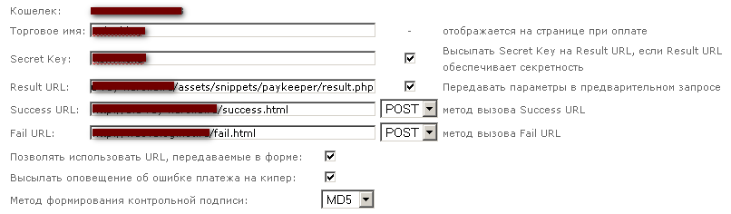

Paykeeper 1.5
Описание
Сниппет для онлайн-оплаты в интернет-магазине MODx + Shopkeeper (>=0.9.4).
Интегрирована система Webmoney (без посредников) и Robokassa. Перечень валют, принимаемых в Robokassa можно посмотреть на этой странице.
После совершения оплаты заказ в модуле Shopkeeper переводится в статус "Оплата получена".
Можно производить оплату сразу после отправки заказа или после подтверждения заказа менеджером. Сниппет интегрируется со сниппетом личного кабинета покупателя - SHKUserProfile.
Установка
- Скопировать файлы сниппета в папку assets/snippets/paykeeper/.
- В системе управления перейти "Элементы" -> "Управление элементами" -> "Сниппеты". Нажать ссылку "Новый сниппет".
-
Название сниппета: Paykeeper,
Описание: Онлайн-оплата покупок,
Открыть файл paykeeper/install/Paykeeper_snippet.txt, скопировать содержимое и вставить в поле "Код сниппета". Нажать кнопку "Сохранить".
Оплата сразу после отправки заказа
-
В системе управления открыть для редактирования страницу, которая открывается после оформления заказа (&gotoid в eForm). Вставить в поле "Содержимое ресурса" вызов сниппета:
[!Paykeeper!].
Сохранить.
Также вызов можно вставить в шаблон страницы. -
Проверьте чтобы на странице оформления заказа в вызове сниппета eForm был указан параметр &gotoid.
Пример:
[!eForm? &gotoid=`15` &formid=`shopOrderForm` &tpl=`shopOrderForm` &report=`shopOrderReport` &subject=`Новый заказ` &eFormOnBeforeMailSent=`populateOrderData` &eFormOnMailSent=`sendOrderToManager`!]
где 15 - это ID страницы, которая будет открываться после отправки заказа.
В шаблоне формы должен быть выпадающий список (select) для выбора метода оплаты. Пример:
<select name="payment" > <option value="При получении">При получении</option> <option value="webmoney">WebMoney</option> <option value="robokassa">Другие электронные деньги</option> </select>
Теперь после отправки заказа на следующей странице будет появляться кнопка "Оплатить сейчас". - Настройте платежные системы.
Настройка ROBOKASSы
- В личном кабинете в поле "Result URL" введите URL, по которой доступен файл result.php - http://[ваш домен]/assets/snippets/paykeeper/result.php
- Метод отсылки данных по Result URL - POST.
- Success URL - страница, которая будет открываться после успешного прохождения платежа.
Метод отсылки данных по Success URL - POST - Fail URL - страница, которая будет открываться после незавершенного платежа.
Метод отсылки данных по Fail URL - POST - Введите Пароль #1 и Пароль #2.

- Откройте файл paykeeper/robokassa/config.php и введите свои данные (логин, пароль #1, пароль #2.).
Настройка WEBMONEY
- У вас должен быть Аттестат продавца. Откройте сайт http://merchant.webmoney.ru/ и авторизуйтесь (ссылка "Войти").
- Перейдите "Настройки" -> "Web Merchant Interface" -> "R-кошелек" -> "Настроить".
- Настройки анологичные Robokassa.
 - Откройте файл paykeeper/webmoney/config.php и введите номер R-кошелька ($purse['rub']) и Secret Key. Другие валюты пока не поддерживаются (подробнее ниже).
Шаблоны (чанки) и плейсхолдеры
| Параметр сниппета | Описание | Плейсхолдеры в шаблоне | Примечание |
|---|---|---|---|
| &WMstartPayTpl | Шаблон первой страницы при оплате Webmoney. |
[+action+] - action для формы; [+email+] - адрес электронной почты пользователя; [+payment_button+] - название кнопки; [+disabled+] - блокировка кнопки, если пользователь незарегистрирован и e-mail не указан (disabled="disabled"). |
Пример: paykeeper/tpl/WMstartPayTpl.tpl |
| &RKstartPayTpl | Шаблон первой страницы при оплате через Robokassa. | Пример: paykeeper/tpl/RKstartPayTpl.tpl | |
| &WMpayTpl | Шаблон страницы второго шага оплаты Webmoney (перед переходом на страницу системы оплаты). |
[+action+] - action для формы; [+email_string+] - строка с предупреждением, если указан некорректный e-mail; [+pay_summ+] - сумма платежа; [+pay_purse_type+] - тип WM-кошелька для оплаты; [+h_inputs+] - скрытые текстовые, необходимые для системы оптаты. |
Пример: paykeeper/tpl/WMkpayTpl.tpl |
| &RKpayTpl | Шаблон страницы второго шага оплаты Robokassa (перед переходом на страницу системы оплаты). |
[+action+] - см. выше. [+email_string+] - см. выше. [+pay_summ+] - см. выше. [+pay_currency+] - валюта (руб.) [+h_inputs+] - см. выше. |
Пример: paykeeper/tpl/RKpayTpl.tpl |
Особенности и дополнительные возможности
- Если сниппет вызывается без параметров, значения суммы оплаты, ID заказа и т.д. берется из сессий, которые создаются сниппетом Shopkeeper после сохранения заказа.
- Сниппет можно вызывать из других сниппетов через функцию $modx->runSnippet().
- В данной версии (1.x) для WebMoney поддерживается оплата только WMR (рубли). Планируется интеграция с модулем захвата курса валют с сайта центробанка и автоматический пересчет цены в другие валюты.
- Сниппет тесторовался только с кодировкой сайта UTF-8, т.к. она является рекомендуемой для MODx. C другой кодировкой корректная работа не гарантируется.
- Гарантируется корректная работа только с Shopkeeper версии 0.9.4 и выше.
Параметры сниппета
| Параметр | Описание и значения | Значение по умолчанию | Примечание |
|---|---|---|---|
| &lang | язык | Язык системы управления | В настоящее время доступны языки: `russian` (папка paykeeper/lang/) |
| &paymentDesc | Описание платежа | `Оплата покупки в интернет-магазине` | |
| &paymentButton | Название кнопки на первой странице | `Оплатить сейчас` | |
| &resultURL | URL страницы "Result URL" | `http://[ваш сайт]/assets/snippets/paykeeper/result.php` | Не обязательный параметр. Можно применять для Webmoney. |
| &payment_method | Метод оплаты `webmoney`, `robokassa` |
$_SESSION['shk_payment_method'] | |
| &payment_orderid | ID заказа | $_SESSION['shk_order_id'] | |
| &payment_userid | ID пользователя | $_SESSION['shk_order_user_id'] | |
| &payment_useremail | E-mail пользователя | $_SESSION['shk_order_user_email'] | |
| &payment_value | Сумма оплаты | $_SESSION['shk_order_price'] | |
| &payment_currency | Валюта оплаты | $_SESSION['shk_currency'] | |
| &payment_reserve | Зарезервировать товар для оплаты `true`, `false` |
`false` | Оплата производится после того как статус заказа переводится в "Принят к оплате". Новый параметр в версии 1.5. |
| &WMstartPayTpl | Имя чанка с шаблоном первой страницы при оплате Webmoney | `@FILE:assets/snippets/paykeeper/tpl/WMstartPayTpl.tpl` | Если чанки хранятся в файлах, можно указать путь с командой "@FILE:". Если чанки созданы в системе управления, то указывается только имя чанка (например &WMstartPayTpl=`WMstartPay`) |
| &WMpayTpl | Имя чанка с шаблоном страницы второго шага оплаты Webmoney (перед переходом на страницу системы оплаты) | `@FILE:assets/snippets/paykeeper/tpl/WMkpayTpl.tpl` | |
| &RKstartPayTpl | Имя чанка с шаблоном первой страницы при оплате через Robokassa | `@FILE:assets/snippets/paykeeper/tpl/RKstartPayTpl.tpl` | |
| &RKpayTpl | Имя чанка с шаблоном страницы второго шага оплаты Robokassa (перед переходом на страницу системы оплаты) | `@FILE:assets/snippets/paykeeper/tpl/RKpayTpl.tpl` | |
| &payTest | Тестовый режим оплаты. Возможные значения: `true`, `false`. | `false` |